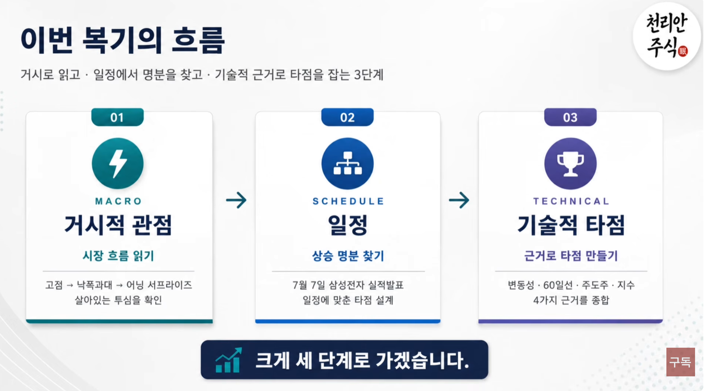

1️⃣ 추세추종이란 무엇인가?
2️⃣ 왜 추세를 따라야 하는가?
3️⃣ 추세추종과 심리 : 자기자신과의 싸움
4️⃣ 진입타이밍과 적용범위
5️⃣ 추세와 함께 하는 투자
6️⃣ 추세추종에서는 여러가지 매매법을 쓸 수 있다
1️⃣ 거시적관점 : 시장 흐름 읽기
2️⃣ 일정체크 : 상승 명분 찾기
3️⃣ 기술적분석 : 근거로 타점 만들기
.
1️⃣ 추세추종이란 무엇인가?
2️⃣ 왜 추세를 따라야 하는가?
3️⃣ 추세추종과 심리 : 자기자신과의 싸움
4️⃣ 진입타이밍과 적용범위
5️⃣ 추세와 함께 하는 투자
6️⃣ 추세추종에서는 여러가지 매매법을 쓸 수 있다
핀바 캔들
인사이드바 캔들
삼법형 캔들
모닝스타/이브닝스타 캔들
적삼병/흑삼병 캔들
캔들패턴 실전매매 활용법

현재이미지_idx / 총이미지수